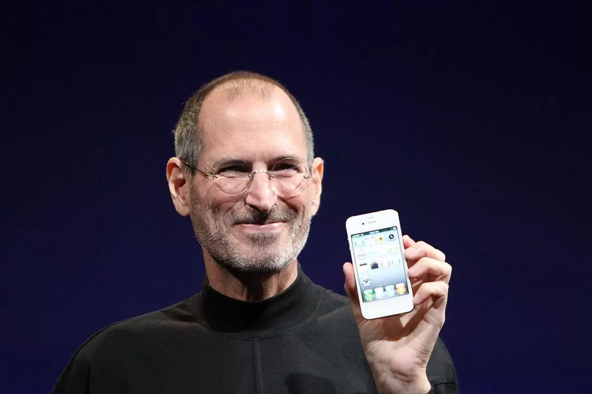

Historia da Maçã Mordida
A tarefa de criar um logotipo mais moderno e objetivo para a Apple caiu então nas mãos do designer gráfico Rob Janoff, contratado por Jobs em 1977. Após se reunir pela primeira vez com o executivo no começo daquele ano, Janoff passou cerca de uma semana e meia estudando a forma de maçãs reais e desenhando vários rascunhos do que viria a se tornar o seu primeiro e único protótipo. Foi muito simples, na verdade. Apenas comprei um monte de maçãs, coloquei-as em uma tigela e as desenhei por uma semana ou mais para simplificar a forma. Nascia, então, a primeira versão da boa e velha maçã mordida, que na época ainda contava com o clássico arco-íris em alusão ao vindouro Apple II — o primeiro computador pessoal do mundo com um display colorido. O logotipo foi prontamente aprovado por Jobs e adotado em todos os produtos, comerciais e documentos da empresa pelas próximas duas décadas.
Steve Jobs e o surgimento da Maçã
Na época, Steve Jobs escolheu a simplicidade para promover a Apple, para que ela fosse vista como uma marca luxuosa e elegante. Sobretudo, ele decidiu colocar uma versão grande do logotipo em todos os seus produtos, garantindo que a marca ficasse claramente visível. Na época, Steve Jobs escolheu a simplicidade para promover a Apple, para que ela fosse vista como uma marca luxuosa e elegante. Sobretudo, ele decidiu colocar uma versão grande do logotipo em todos os seus produtos, garantindo que a marca ficasse claramente visível.
